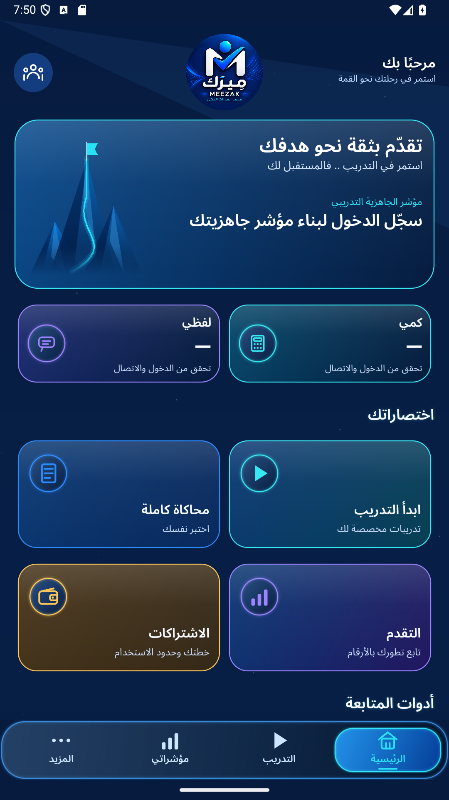
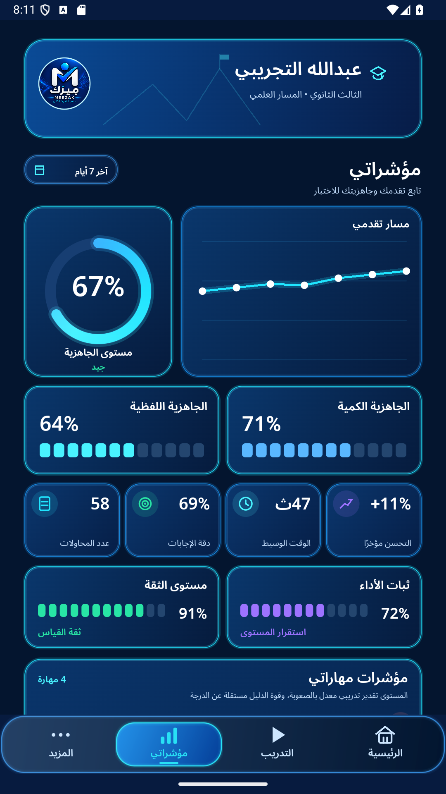
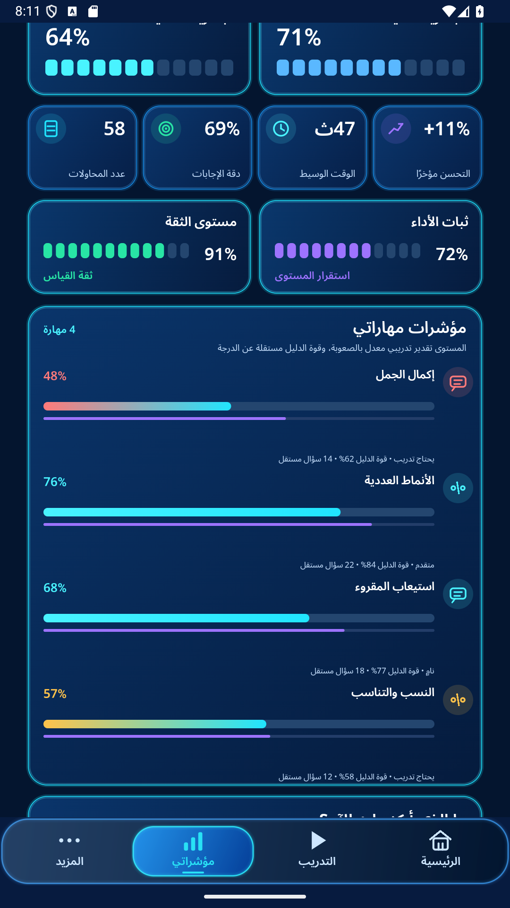
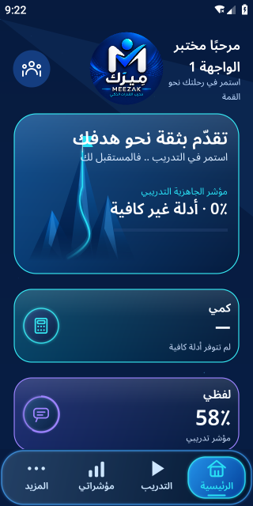
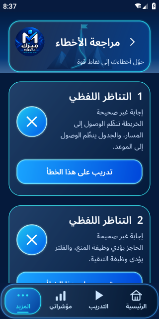
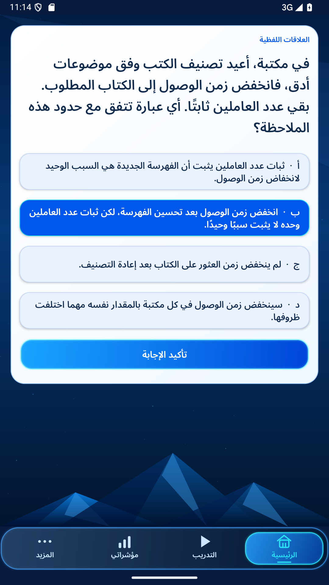
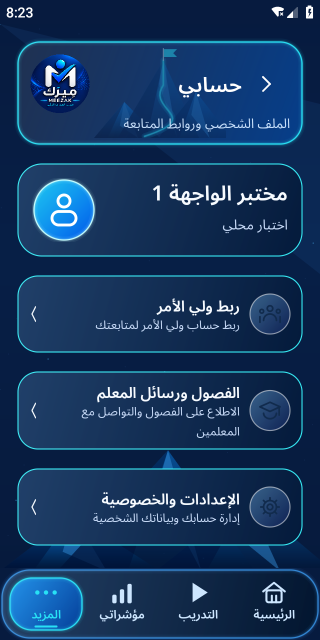

تدريب كمي ولفظي
مسارات تدريب واضحة تساعدك على العمل على المهارات والانتقال بين المجالات بسهولة.
من أول تدريب إلى قراءة مؤشرات تقدّمك، يجمع مِيزَك تجربة الاستعداد للقدرات في مساحة واحدة، بتصميم يساعدك على التركيز على ما يهم فعلًا.


لا نريد شاشة مزدحمة بكل شيء؛ نريد لكل خطوة مكانها الواضح. ولهذا تتكامل أدوات مِيزَك لتساعدك على التدرّب والمتابعة دون تشتيت.
مسارات تدريب واضحة تساعدك على العمل على المهارات والانتقال بين المجالات بسهولة.
تجربة اختبار منظّمة تمنحك مساحة لممارسة ما تعلمته وقياس استعدادك.
شاهد التقدم والمعلومات التعليمية في واجهات مرتبة وسهلة الفهم.
ارجع إلى مراجعة الأخطاء لتفهم مواضع التعثر وتواصل التدريب بعناية.
التجربة الجيدة لا تطلب منك البحث عن خطوتك التالية. من الرئيسية، تصل إلى التدريب والمحاكاة والمؤشرات والاشتراكات بترتيب يختصر الطريق.
ابدأ من التدريب الكمي أو اللفظي بحسب احتياجك.
انتقل إلى التدريب أو المحاكاة عبر مسارات واضحة.
تابع المؤشرات وارجع إلى أخطائك لتحدد خطوتك القادمة.
صور حقيقية من التطبيق تشمل لقطات حديثة مقدمة من صاحب المشروع، ولقطات محفوظة من نسخة اختبار سابقة. الأسماء والنسب المرئية ضمن حساب العرض المصوّر، ولا تمثل نتائج المستخدمين عمومًا.
وصول سريع للتدريب الكمي واللفظي، والمحاكاة، والمؤشرات — من واجهة واحدة.
شاهد جاهزيتك العامة، ومسار تطورك، ومؤشرات الكمي واللفظي والدقة والثقة، كما تظهر في واجهة التطبيق.
تفصيل المهارات، من إكمال الجمل إلى الأنماط العددية واستيعاب المقروء والنسب والتناسب؛ مع مؤشرات كل مهارة لفهم نقاط القوة وفرص التحسين.

مؤشرات مرئية تساعدك على تكوين صورة أوضح عن مستواك وما تحتاج العمل عليه.

ارجع إلى الأسئلة التي لم تُجب عنها بشكل صحيح، وابدأ التدريب على نقطة الضعف نفسها.

عرض واضح للسؤال والاختيارات يترك المساحة الأكبر للتفكير والفهم.

وصول منظّم إلى الملف الشخصي، وربط ولي الأمر، والتواصل مع المعلم، والخصوصية.

* اللقطات الجديدة واردة من النسخة المصوّرة مباشرة، مع صور إضافية من اختبار 1.0.5. النسب تخص الحساب الظاهر بالصورة فقط؛ لم نعدّل أرقامها أو نختلق نتائج.
إلى جانب تدريب الطالب، يتيح مِيزَك مسارات مخصصة للمعلم وولي الأمر مع مراعاة الربط والصلاحيات المناسبة.
اطلع على مسار الطالب وبيانات تقدمه بعد إتمام الربط المصرح به، بعيدًا عن التخمين.
تصوير تجريدي للميزة — ليس لقطة من التطبيقمسار مخصص للفصول وروابط الطلاب والتقارير المتاحة ضمن صلاحيات المعلم.
تصوير تجريدي للميزة — ليس لقطة من التطبيقنضع روابط الخصوصية وطرق التواصل وطلب حذف الحساب في مكان يسهل الوصول إليه، سواء كنت تستخدم التطبيق الآن أو لم يعد مثبتًا لديك.
بعض التفاصيل التي قد تحتاج معرفتها قبل البدء.
نعم. يتضمن مِيزَك مسارات للتدريب على المهارات الكمية واللفظية ضمن تجربة الاستعداد لاختبار القدرات.
يحتوي التطبيق على واجهات للمؤشرات ومتابعة التعلم. يعتمد ما يظهر فيها على بيانات استخدام الحساب الفعلية.
نعم، وتخضع مشاهدة بيانات الطالب لعملية ربط وصلاحيات مناسبة.
يمكنك الاطلاع على تعليمات حذف الحساب والبيانات، بما فيها طريقة تقديم الطلب خارج التطبيق.
من خلال صفحة الدعم أو البريد الإلكتروني support@meezak.app. لا ترسل كلمة المرور أو رموز التحقق.
تعرّف على التجربة، واكتشف كيف يمنحك التدريب المنظّم رؤية أوضح لرحلتك في القدرات.
استكشف شاشات التطبيق